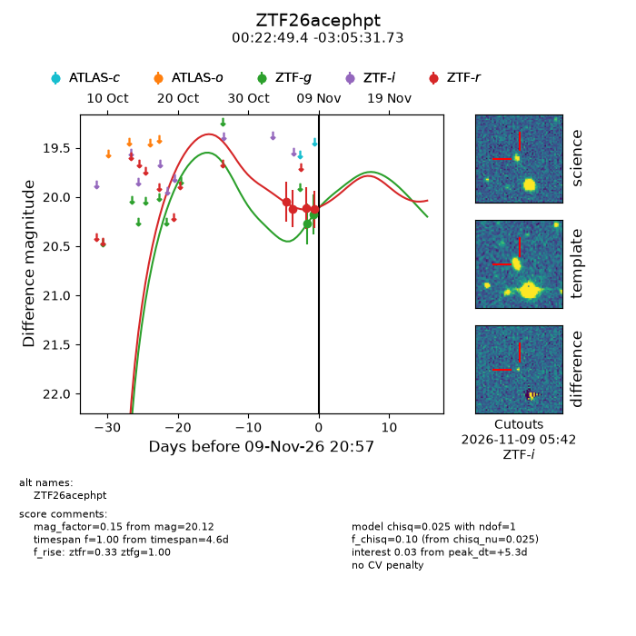
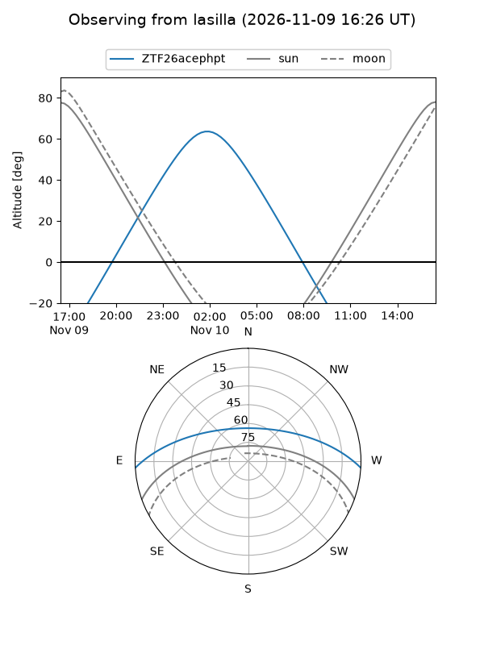
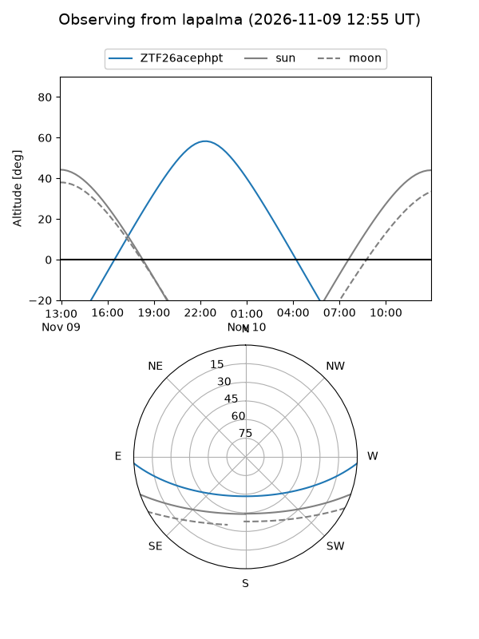
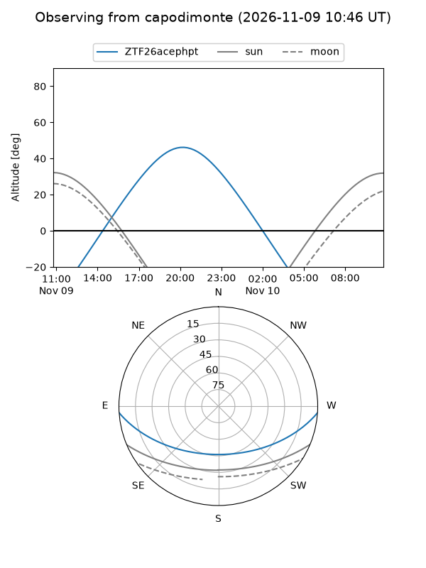
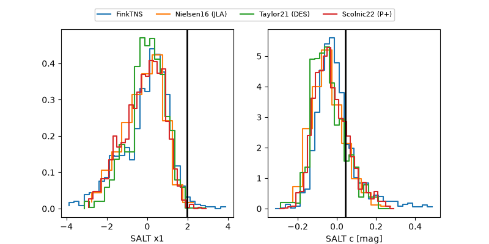

ZTF26acephpt
Target ZTF26acephpt at 2026-11-09 20:59
Aliases and brokers:
FINK-ZTF: ztf.fink-portal.org/ZTF26acephpt
Lasair-ZTF: lasair-ztf.lsst.ac.uk/objects/ZTF26acephpt
ALeRCE-ZTF: alerce.online/object/ZTF26acephpt
Direct TNS query: direct search
alt names
ZTF26acephpt (ztf,fink_ztf)
Coordinates:
equatorial (ra, dec) = 5.7057,-3.09215
equatorial (HMS+DMS) = 00:22:49.37,-03:05:31.73
galactic (l, b) = (105.8143,-65.00857)
Flags:
peak dt: +5.3
Photometry:
last ztfg=20.18, ztfr=20.12
2 ztfg, 4 ztfr detections
Lightcurve

Visibility



Additional plots
